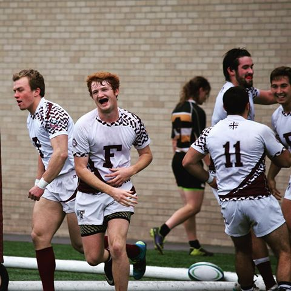

A Bit About Me:
My name is Timothy Moran, but I go by Timmy. I am a senior at Fordham University (Bronx, NY) persuing a BS in Computer Science. I went to a high school called Gonzaga. Gonzaga is a all boys high school located in the heart of Washington D.C., only a couple blocks away from the U.S. Capitol Building. Gonzaga I learned how to play rugby, and that is part of what lead me to Fordham University. I play rugby here at Fordham (Here is a link to our website), and I have started for the "A Side" (the side that competes on the highest level) since my freshman year.